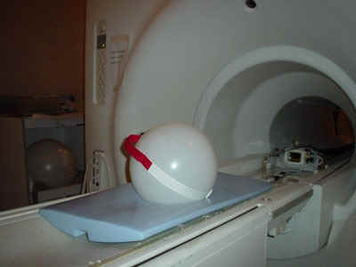
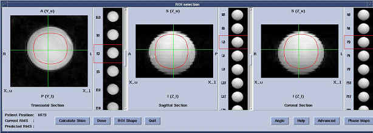
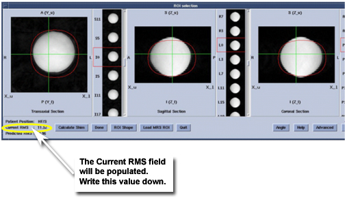

GE Exclusive Use Only
Direction 5440000, Rev# 5
Signa HDxt Service Methods
Module Version 5.0, Version Date 7/22/10
GE Exclusive Use Only |
| Required Persons | Preliminary Reqs | Procedure | Finalization |
|---|---|---|---|
| 1 | Not Applicable | 30 mins | Not Applicable |
The procedure below provides a qualitative method of testing the reference maps generated to insure basic functionality. The process should be run on each of the reference maps generated. The process to functional check each Field Reference Map is as follows:
Setup phantom and Select High Order Shim Series
Run back-to-back shim scans till the shim converges
Offset a shim channel and run another shim iteration
Confirm re-convergence of shim channel offset
Repeat for all other shim channels
| Item | Qty | Effectivity | Part# | Manufacturer | |
|---|---|---|---|---|---|
| Body TLT Sphere | 1 | 1.5T | 2135650 | - | |
| Body TLT Sphere | 1 | 3.0T | 2360025 | - | |
| Head Loader Positioner | 1 | - | 5110241 | - | |
| ||||
| Poison Hazard! | ||||
| The phantom contains Dimethyl Silicone fluid. DO NOT INGEST. Eye contact may cause minor irritation. | ||||
| If a leak or spill occurs wipe up or absorb in inert material and place in container for disposal. Incineration or landfill is the recommended disposal method. |
| ||||
| POISON HAZARD! | ||||
| Signa 1.5T and 1.0T System Phantoms CONTAINS NICKEL, A SUSPECTED CARCINOGEN. | ||||
| DO NOT INGEST. DISPOSE OF AS A HAZARDOUS WASTE ACCORDING TO STATE AND FEDERAL REGULATIONS. |
| Condition | Reference | Effectivity |
|---|
| NOTE: | For TwinSpeed: this procedure should be run for 48 cm
FOV on the Body Coil WB Gradient, 48 cm FOV on the Body Coil ZM Gradient,
28 cm FOV on the Head Coil WB Gradient, and 28 cm FOV on the Head
Coil ZM Gradient. (For 3T/94) : only 1 gradient mode will be used. |
Set up a scan:
Select [New Pt].
Patient ID: geservice
Weight 111 lbs.
Select [GE] and then [Other] Protocols
(For TwinSpeed) : Select protocol [HighOrderAutoshimTwin3T] or [HighOrderAutoshimTwin1p5T] (depending on field strength). Select proper series (dependent on FOV, Coil and Gradient Mode).
(For 3T/94) Or, : Select [HighOrderAutoshimCRM3T]. Select proper series (dependent on FOV and Coil).
Select [Accept].
Place correct phantom in coil to be tested:
(For the 48 cm FOV Field Map) : Setup the Body TLT Sphere Phantom on the patient cradle. (See Illustration 1.)
Illustration 1: SETUP FOR THE 48CM FOV FIELD MAP - BODY TLT SPHERE ON PADS

(For the 28 cm FOV Field Map) : Install the Head Coil and setup the Body TLT Sphere inside the Head Coil. (See Illustration 2.)
Illustration 2: SETUP FOR THE 28CM FOV FIELD MAP - BODY TLT SPHERE IN HEAD COIL

Select [Save Series] and then select [Scan]. The Shim User Interface should appear after the scan stops (see Illustration 3).
Illustration 3: BASIC SHIM USER INTERFACE

Position the ROI (use an oval shape) within the center of the spherical phantom image covering approximately 80% of the volume in all three planes. To move the ROI, click and drag with the left mouse button inside the ROI. To change the size of the ROI, click and drag with the left mouse button outside the ROI.
Select [Advanced], then [Calculate Shim] buttons. The user should see the “Advanced” screen (Illustration 5) that contains the specific shim information for each shim channel. See Illustration 4 and Illustration 5.
Illustration 4: BASIC SHIM USER INTERFACE AFTER CLICKING [CALCULATE SHIM]

Illustration 5: ADVANCED SHIM USER INTERFACE

| NOTE: | The screen will display the Current RMS and Predicted RMS shim values shown on the Basic screen to compare to the next iteration. Look at the Shim current deltas for each High Order Shim Channel. Convergence for these shim channels will be defined as asking for less than 30mA (0.03A) of current change. The User Interface displays units in Amps. |
Record data in table 1,2,3,4,5 or 6. 
If the Advanced Shim User Interface screen is open (Illustration 5), click on [Download], then in the Basic Shim User Interface screen (Illustration 3), click on [Quit].
Select [Scan] again and DO NOT pre-scan between iterations.
Repeat Step 1 through Step 8 for remaining references Maps. All references maps for a system should be tested.
| NOTE: | For TwinSpeed: this procedure should be run for 48 cm
FOV on the Body Coil WB Gradient, 48 m FOV on the Body Coil ZM Gradient,
28 cm FOV on the Head Coil WB Gradient, and 28 cm FOV on the Head
Coil ZM Gradient. (For 3T/94) : only 1 gradient mode will be used. |
Convergence is achieved when one of the following two conditions is met:
The difference in Current RMS between two consecutive runs is less than 1 Hz (see Illustration 4).
The Advanced Interface (see Illustration 5) is asking for less than 30mA (0.03A) of Shim Current Delta.
Once convergence is achieved, the following steps will be repeated for each channel until all shim channels have been functionally tested. Only one reference map/setup must be tested.
Go to the “Advanced” screen and disable all channels
except for the one to be tested by clicking on the button next to
each channel. This process will start testing the ZY channel, refer
to Shim Channel Sequence & Delta Shim Current Data,  for the sequence for the remaining channels.
for the sequence for the remaining channels.
Enter a 100mA offset by typing 0.1 in the current delta field for the channel being tested and select [Done] from the basic user screen to download and exit the interface.
Select [Scan] to run the shim scan with the current offset. The user interface will appear at the end of the scan.
Select [Advanced] to open the “Advanced” screen again. Make sure only the ZY channel is enabled (may need to deselect the other channels again, channels will stay disabled if they are deselected prior to using Calculate shim but not after).
Select [Calculate Shim] and look at the
change requested for the ZY channel. The requested current change
should be opposite in polarity from the offset entered in
Step 11.b and should be about 70mA in amplitude signifying at least a 70%
requested correction of the shim offset. Typically for most channels
you will see much better than this. Record the delta current requested
in the supplied data sheets:  .
.
Select [Done] to download current delta and exit interface.
Select [Scan] and repeat
Step 11.d through
Step 11.f until at least 90% of the shim offset entered in step 10 is recovered.
Add the delta currents from each iteration and record in the data
sheets  . The total recovered current should
be between 0.090 and 0.100 amps. See the example in the last row of
the table.
. The total recovered current should
be between 0.090 and 0.100 amps. See the example in the last row of
the table.
| NOTE: | Fewer than three iterations should be required, with 1-2 iterations typical. Delta currents < 40 ma on the 1st iteration or delta currents that change polarity indicate a shim channel problem of either a dead channel or possibly an unstable shim output. This assumes the system passes SPT stability and is clean of image artifacts. |
Put away any phantoms or tools used.
Do a check scan to insure the scanner is ready for patient scanning.